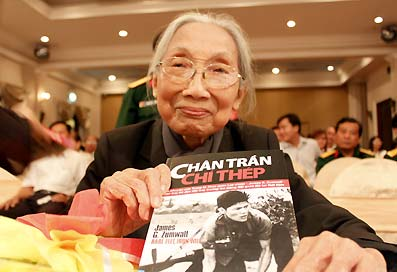

Lời Người Dịch

õ cửa nhà Mẹ Việt Nam Anh hùng Bùi Thị Mè vào một buổi chiều đầu năm, tôi không khỏi e ngại vì câu chuyện mà tôi mang đến gợi nhớ một quá khứ đáng tự hào nhưng đầy đau thương của bà.

“Ba lần tiễn con đi. Hai lần khóc thầm lặng lẽ”. Bà Mè đã có hơn hai lần khóc thầm lặng lẽ, có những lúc nước mắt cạn khô trước nỗi mất mát vô bờ khi ba người con trai ngã xuống trên chiến trường gần như cùng lúc. Nhưng nỗi đau vô cùng ấy đã không làm người phụ nữ mảnh mai này gục ngã. Bà vẫn tiếp tục chiến đấu cho tới tận ngày non sông thống nhất.Chính ở những người phụ nữ như bà Mè, cựu chiến binh Mỹ James Zumwalt đã nhìn thấy một CHÍ THÉP. CHÍ THÉP ấy ẩn mình sau những đôi CHÂN TRẦN. Đó chính là sức mạnh đã giúp người Việt Nam vượt qua cuộc chiến kinh khiếp trước một kẻ thù vượt trội về công nghệ vũ khí.
Chiến tranh đi qua, kẻ thắng, người bại đều trở về nhà. Nhưng cuộc chiến không kết thúc vào lúc tiếng súng ngưng. Nó vẫn còn tiếp diễn với nhiều người, đặc biệt là những người lính trở về từ chiến trường. Nỗi đau mất đi người thân, đồng đội hoặc một phần thân thể, nỗi ám ảnh về những nghịch cảnh bạo tàn của quá khứ như bóng ma cứ đeo đuổi mãi, khiến cho vết thương tâm hồn ngày càng trầm trọng thêm, khi mà vết thương thịt da đã được chữa lành.
Nhiều người Mỹ trở về từ cuộc chiến đã mãi kẹt lại ở quá khứ, với những day dứt, hận thù, ám ảnh mà người ta từng gọi là “Hội chứng Việt Nam”.
Ông James Zumwalt, sinh trưởng trong một gia đình có truyền thống nhiều đời binh nghiệp, có nhiều hơn một lý do để tự giam hãm mình trong cuộc chiến của quá khứ, để cho những thù hận trầm tích theo tháng năm. Trong một thời gian dài, chừng hai mươi năm sau ngày Chiến tranh Việt Nam kết thúc, ông vẫn nhìn về phía Việt Nam, kẻ thù cũ của nước Mỹ và của chính bản thân ông, với một niềm hận thù dai dẳng. Cái chết của người anh trai vì căn bệnh ung thư, hậu quả của phơi nhiễm Chất độc Cam, càng khiến ông Zumwalt nung nấu lòng thù hận, với niềm tin xác quyết rằng chính người Việt Nam đã gây ra cho ông bi kịch gia đình ấy.
Thế rồi, từ một chuyến đi khai mở vào năm 1994, cơ hội hàn gắn đã đến, trước hết là cho bản thân ông. Khi tiếp xúc với những con người từng ở bên kia chiến tuyến, mà tới tận lúc bấy giờ ông Zumwalt vẫn chưa nguôi ác cảm, người cựu chiến binh Mỹ dần nhận ra nhiều điều mới mẻ, mà ông gọi là những sự khai mở tâm hồn và nhận thức.
Trước chuyến đi, ông chỉ tin rằng cuộc chiến của người Mỹ là chính nghĩa, nỗi đau mà người Mỹ hứng chịu từ cuộc chiến là duy nhất có ý nghĩa, và người Việt Nam phía bên kia chiến tuyến là kẻ thù tàn bạo, phải chịu trách nhiệm trước cuộc thua của người Mỹ và bi kịch gia đình ông. Giờ đây, qua những cuộc tiếp xúc từ các tướng lĩnh cấp cao như Võ Nguyên Giáp, Đồng Sĩ Nguyên, Nguyễn Huy Phan, tới những người dân thường, từ những trai làng xung phong ra trận tới những phụ nữ một lòng son sắt như bà Bùi Thị Mè, ông Zumwalt đã vỡ ra điều bất khả tri bấy lâu. Ông chợt nhận thấy rằng, nỗi đau mà chiến tranh gây ra không từ một phía nào, đặc biệt là đối với Việt Nam, khi phạm vi chiến cuộc bao phủ lên toàn bộ đất nước này, thì không chỉ các quân nhân và gia đình của họ, mà mọi người dân đều là nạn nhân của cuộc chiến.
Một thời gian dài sau chiến tranh, những cựu quân nhân như ông Zumwalt vẫn không hiểu đâu là sức mạnh đã giúp người Việt Nam trong cuộc trường kỳ kháng chiến. Chỉ tới sau chuyến đi khai mở ấy, ông mới ngộ ra:
“Một vài ý kiến tại Mỹ cho rằng nếu tiến hành cuộc chiến tranh ở Việt Nam một cách hợp lý, không có áp lực chính trị, thì người Mỹ đã chiến thắng. Trước khi trở lại Việt Nam vào năm 1994, tôi cũng nghĩ như vậy. Nhưng giờ đây tôi đã nghĩ khác. Chuyển biến trong tôi chỉ diễn ra sau khi tôi thấu hiểu được rằng người Việt Nam có một ý chí sắt đá để có thể chiến đấu đến chừng nào đạt được mục tiêu thống nhất đất nước mới thôi.”
Người Mỹ đã không thực sự có được ý chí ấy khi họ bước vào cuộc chiến. Họ đã không được chuẩn bị như phía Việt Nam. Đối với mỗi quân nhân Mỹ, mỗi ngày trôi qua có nghĩa là thời gian quân ngũ của họ được rút ngắn bớt một ngày. Đối với người Việt Nam, cuộc chiến trước mặt có thể diễn tiến dài lâu, và họ sẵn sàng chiến đấu tới chừng nào đạt được mục đích thống nhất. Họ không bị ám ảnh bởi thời kỳ quân ngũ.
Trong khi người Mỹ chỉ nghĩ tới chuyện về nhà, nghĩ tới “phía sau”; người Việt Nam, ngược lại, dồn hết tinh thần vào những gì ở phía trước. Chính sự khác biệt này đã giải thích cho kết cục của cuộc chiến.
Khi thấu hiểu được nguồn cơn, thấu hiểu được kẻ thù cũ, ông Zumwalt mới tìm thấy cơ hội hàn gắn vết thương chiến tranh, trước hết là của chính ông, và sau đó là nhận thức về một mối quan hệ Việt – Mỹ cần được thúc đẩy.
Người Mỹ đã được đọc và nghe rất nhiều về Chiến tranh Việt Nam. Nhưng với CHÂN TRẦN, CHÍ THÉP, lần đầu tiên họ được nghe tiếng nói của những người từng ở phía bên kia chiến tuyến, trong một tập hợp có hệ thống mà ông Zumwalt đã mất hơn 10 năm tìm hiểu, từ chuyến di khai mở năm 1994, để cho ra đời cuốn sách này. Cuốn sách trước hết là một thông điệp cho chính người Mỹ, những người đang kẹt lại ở quá khứ, với những ám ảnh giày vò. Nó là phương thuốc để người Mỹ chữa lành vết thương mà chiến tranh để lại.
Thấu hiểu kẻ thù là một tiến trình đầy thách thức, và chỉ có thể đắc thụ khi người ta có một thiện chí. Ông Zumwalt, từ trong ám ảnh, đã có một thiện chí đủ lớn để tìm tới những cuộc đối thoại với kẻ thù cũ, để từ đó tường minh những chân lý mà ông chưa hề ngộ ra trước đây, để từ đó, kẻ thù cũ đã trở thành bạn bè.
CHÂN TRẦN, CHÍ THÉP là một cuốn sách công phu và chân thành, nhưng nó cũng rất khó được đón nhận ở phía bên này hoặc bên kia, nếu người đọc không có một thiện chí tương đồng với người viết.
Chiến tranh đã lùi xa, kẻ thù ở bên kia chiến tuyến đã là một khái niệm của quá khứ. Kẻ thù giờ đây chính là rào cản nội tại, có thể do chính mỗi con người chúng ta tự dựng lên, để ngăn cản chúng ta tiến tới một sự thấu hiểu.
Nếu người Mỹ hiểu thấu đáo về người Việt Nam ngay từ đầu, có lẽ nhân loại đã tránh phải chứng kiến một trong những cuộc chiến tranh tàn khốc nhất trong lịch sử. Chính vì thế mà giờ đây, khi cuộc chiến đã lùi xa, tiến trình thấu hiểu cần được thúc đẩy hơn, để từ đó có thể tránh được nguy cơ gặp lại quá khứ ở tương lai. Nhắc lại quá khứ không phải để đay nghiến lịch sử. Nhắc lại quá khứ - như tinh thần của CHÂN TRẦN, CHÍ THÉP – là để hướng tới tương lai, một tương lai sự thấu hiểu và tin cậy lẫn nhau.
Khi đến gặp bà Bùi Thị Mè, trong quá trình dịch cuốc sách này, tôi đã gợi nhắc lại câu chuyện buồn quá khứ với một sự e ngại rằng điều đó một lần nữa khiến bà tổn thương. Nhưng tôi sớm nhận thấy mình hồ đồ. Người phụ nữ đã quá 90 tuổi này rốt cuộc lại chính là người đã trấn an cho tôi khỏi những lấn cấn ấy. Bà nhắc lại quá khứ với một nụ cười đầy bao dung. Niềm đau vẫn trầm tích, nhưng bà không mắc kẹt lại ở quá khứ, như nhiều người Mỹ đã và đang. Mỗi ngày bà vẫn đôn đáo cho những cuộc tiếp xúc, những hoạt động hữu nghị và nhân đạo.
Bà nói: “Nhiều người hỏi cô sao không nghỉ ngơi an hưởng tuổi già. Cô trả lời: những người con trai của cô từng hứa sẽ chiến đấu để thống nhất đất nước và sau đó sẽ ra sức xây dựng Tổ quốc đẹp giàu. Các anh chỉ mới hoàn thành vế đầu của lời hứa nên giờ cô phải làm phần việc còn lại”.
Rồi bà cười. Một nụ cười thanh thản.
ĐỖ HÙNG
Trưởng ban Quốc tế Báo Thanh niên